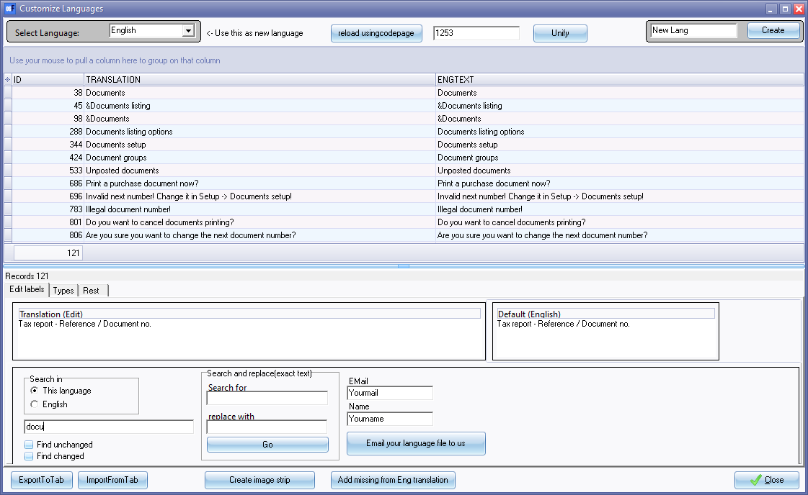

Customise language
osFinancials offers the flexibility to customise the language used within the software to cater to specific industries and regional requirements. This customisation allows businesses to tailor the terminologies and labels used in osFinancials to match their industry jargon, corporate preferences, and local language requirements.
What are the options to customise languages?
Here's how you can customise the language in osFinancials:
- Editing labels and terminologies: osFinancials allows you to modify the labels and terminologies used for various fields and functions within osFinancials. For example, you can change the label "Stock" to "Inventory" if that's the term commonly used in your industry. Similarly, you can edit labels for accounts, transaction types, business processes, and more to align with your industry's specific terms.
- Customising types: In addition to editing labels, osFinancials also allows you to customise field types to suit your industry's needs. You may have specific data requirements relevant to your industry that can be modified to streamline data entry and reporting. For example, the default document types in osFinancials is invoice, credit note and quote for sales documents and purchase, supplier return and order for purchase documents. For example, you can change the Document type for "Quote" to "Estimates" if that's the term commonly used in your country and industry.
- Localising for country-specific languages: osFinancials supports various languages to cater to users from different regions. You can choose the language that best matches your country's official language or the language preferred by your employees. This localisation enhances user experience and ensures clear communication within osFinancials.
- Tax regime customisation: Tax regimes can vary significantly between countries and industries. In osFinancials, you can configure tax settings based on your specific tax requirements, such as Value Added Tax (VAT), Goods and Services Tax (GST), Sales Tax rates, tax codes, tax reporting, and compliance rules.
These changes will customise the user interface elements like buttons, menus, and navigation. Adjusting the interface layout to match your industry's workflow can improve productivity and reduce the learning curve for new users. These changes will also be reflected in the reports and the translatable document layout files.
By customizing the language and settings in osFinancials, businesses can enhance usability, accuracy, and compliance with industry-specific requirements. This customization empowers companies to effectively manage financial data and gain valuable insights for better decision-making and financial control.
What is affected by customising the language?
When you customise the language in osFinancials, the changes you make to labels, field types, and document types will be reflected not only in the user interface but also in the reports and translatable document layout files. This ensures consistency throughout the entire system, providing a seamless experience for users and stakeholders.
Let's explore how these changes are reflected:
- User interface: The customised language will be visible in the user interface of osFinancials, including menus, buttons, input fields, and other elements. The modified labels and field types will appear according to your preferences, making it easier for users to interact with the software.
- Reports: Any customisations made to the language, including changes to labels and field types, will be reflected in the reports generated by osFinancials. This means that report headers, column names, and other relevant information will be displayed in the customised language, making the reports more user-friendly and relevant to your business.
- Translatable document layout files: In osFinancials, document layout files such as the "Layout file, Document layout file", and the "Document layout (15-codes) file" are designed to be versatile and support various types of documents such as invoices, credit notes, quotes, purchases, supplier returns, orders. Changing the document types in Tools → Customise language - Types tab on the Setup ribbon, will print as the Document name when these documents are printed. For example, when you make changes to document types, such as renaming "Quotes" to "Estimates," these changes will be automatically reflected in the respective document layouts.
The the customised language will be visible in the these mentioned documents types, including the "Delivery notes" and "Point-of-Sale layout files". These layout files provide the flexibility to customise the appearance and content of documents such as invoices, credit notes, quotes, purchases, supplier returns, orders, delivery notes, and more. osFinancials allows you to customise the layout of documents such as invoices, quotes, purchase orders, etc. This ensures that the documents generated by osFinancials use the language you have customized, improving consistency and professionalism in your business communications.
By having consistent language across the entire osFinancials system, you create a more cohesive and efficient financial management experience. Customising the language to align with your industry's terminology and business practices allows your team to work seamlessly with the software, leading to improved productivity and accuracy in financial transactions and reporting.
How to set your customised language file as default?
In osFinancials, you have the option to set or change the default language or your own customized language for the Set of Books through the Setup → Access control menu on the Setup ribbon). This enables you to have your preferred language automatically loaded whenever you open the Set of Books. After selecting the desired language, save the changes. osFinancials will now use the selected language as the default whenever you open the Set of Books.
By setting your preferred language or customising the language settings through the Access control menu, osFinancials will display all labels, terminologies, and interface elements, reports and document layout files in the selected language whenever you access your Set of Books. This makes it more convenient and user-friendly, especially when you have customized the language to suit your industry or regional requirements.
Important notes on Customising language files
The language files in osFinancials are stored in the *.dfm file type, and they can be found in the "...\Bin\Languages" directory or another directory where osFinancials is installed. When you first launch osFinancials after installation, it will automatically display the default language based on the country and language of the Set of Books you selected to open.
However, if you want to use a different language, you can switch to any of the available languages by going to Switch language in the Start ribbon. This allows you to choose from a list of supported languages, including English for various countries, Afrikaans, and others.
|
|
When editing language files, it is essential to exercise caution to avoid modifying existing labels in the master language ("English.dfm" file) or an existing layout file. Instead, create a new name for the language file you wish to edit. This ensures that the original language files remain intact, and your customizations are separate and can be easily managed. |

|
|
If you create or edit a language file with your customisations, it is advisable to save a copy of the language file elsewhere on your system. This precautionary step ensures that you have a backup in case you install an update of osFinancials, uninstall osFinancials or install new versions that might not include your customised language file. |

Overall, osFinancials provides a straightforward way to switch between different languages and allows users to customize the language settings to match their preferences or regional requirements. By using this feature, businesses can operate efficiently and effectively in their preferred language, making the software more user-friendly and accessible.
Structure of language labels
The following series of LabelID's have been reserved for the following:
- 901000 - Plugins - Subscriptions
- 902000 - Plugins - Price agreements
- 903000 - Multimedia
- 906000 - Reportman reports and document layout files
- 1000000 - Welcome screen (discontinued)
Create, Edit language files
To create, Edit or Translate Language Labels or Descriptions:
- On the Setup ribbon, select Tools → Customise language.

- The options are as follows:
- Language - You may select any of the available languages from the drop-down list. The selected language will be displayed on the list.
- Create - If you click on the Create button, new language will be displayed in this field. You may then enter the name for your own language.
- Reload using code page - see http://en.wikipedia.org/wiki/Code_page for more information. Some codes that need to be entered for languages, are:
- 720 – Arabic
- 737 – Greek
- 775 – Estonian, Lithuanian and Latvian
- 855 – Cyrillic
- 857 – Turkish
- 860 – Portuguese
- 861 – Icelandic
- 862 – Hebrew
- 863 – French (Quebec French)
- 865 – Danish/Norwegian
- 866 – Cyrillic
- 869 – Greek
- 874 – Thai
- Unify - To be advised.
- ID - The number records of the descriptions that is used by the osFinancials. (This is the label’s record number in the Language table.)
- Message/text - Displays the descriptions of the selected language labels.
- Default (English) - Displays the original default English. This is the master file, and it is recommended that it should not be amended in any way.
- Translation (Edit) - You may type in or edit your own translation in this field.
- Search in - Select to search in the current language or in the English language. You then need to type the word or phrase to search for. You may also further refine your search, to find unchanged words or phrases, to view the unedited labels only.
|
|
The number of records matching your search text will be displayed. |

|
|
You may also click on the Types tab to view the translations of the selected message text (label) in other available languages. |
- Search and Replace - Enter a word or phrase to find. You then need to enter a word or phrase to edit (change the label or message text), and click on the Go button to replace all the words or phrases in the language file.
- E-mail your language file to us - Once finished creating or editing your language file, click to send the language file to the osFinancials developers. This will automatically launch your system’s default e-mail program and attach your language file in the e-mail message. The developers will then add your language file in the next osFinancials release.
- Create image strip - This will create a new image strip for fast loading of icons. For fast loading images, osFinancials uses the *.fst (i.e. "BatchEnabledButtons.fst, ilbandlarge.fst, ilbandsmall.fst" and "ImageList1.fst") files. If you want to edit the icons in a specific theme, remove these files. After editing the icons, you need to click on the Create image strip button, so the icons are loaded from the files again.
- Add missing from Eng translation - This button is added at the bottom of the customise languages from osFinancials 5 (293). If your language file has less records than the number of records in the English language files, (for example if the English language file has 4061 records; and the language file you are editing or translating has less records than 4061); click on this button to add the missing English labels to your translation file.
- Click on the Types tab to edit the translations of the Descriptions in the Types table. You may need to edit the following types:
- Account types (i.e. General ledger, Bank, Tax, Debtor and Creditor).
- Document types (i.e. Invoice, Credit notes, Purchases, Supplier returns, Quotes and Orders) and Adjustments.
- Statement and Remittance.
- Groups names / descriptions (Setup → Groups) (i.e. Account group 1 / 2, Debtor group 1 / 2, Creditor group 1 / 2, Stock group 1 / 2, Document group 1 / 2, Payment type group, Salesperson group, Projects group, Cost Centre 1/ 2 and Languages for Stock.
- Colour descriptions -
|
|
These types have been removed from the Sets of Books in the osFinancials4 Build 1093 installation. This is not applicable to TurboCASH4 and osFinancials5 series (i.e. Classic, Brilliant, Pastel, Keywest, NewSA and Windows Default). |

- Paper types - Pre-printed, Plain A4, Plain eyeline, Forty and Till slip.
- User report row types -
|
|
This is not applicable to the osFinancials4, osFinancials5 or TurboCASH5 or TurboCASH5.2 (i.e. Account, Blank, Column line, Group 1, Group 1 Detail, Group 2, Group 2 Detail, Single line, Text, Budget, Formula, Last year and This year). |
- Stock - Stock item, Comment, Serial number and Financial entry.
- Click on the Rest tab to change the Description of Zero account. This is usually the "Empty" option in Lookups, lists, etc. displaying in osFinancials. It is also used for the Groups empty account. This is usually the Unallocated option in Lookups, lists, etc. displaying in osFinancials.
- Once finished, click on the Close button.
|
|
It is strongly recommended that the label, which is edited or entered, is not longer than the “Default English” labels’ length. If your label is too long, it may cause some options in the program not to function or display properly. Do not use the Delete button to remove any of the existing edited labels. |
E-Mail message file to be included in next release
To E-mail your language file to us
- Enter your E-mail address and Name on the "Customize language" screen.
- Click on the Email your language file to us button. Your system's default email program will be launched.
- Check that it is the correct Language file. You may need to enter any content in the message field, if necessary.
- Click on the Send button of your E-Mail program.
Edit Language files externally
You may export the Language file and edit it in a spreadsheet. Tab Delimited Export and Import -
To create an export file, click on the ExportFromTab button.
When saving the edited file in OpenOffice, select the options save as text and set txt delimiter to empty.
Once the file is saved, you may click on the ImportFromTab button to import the edited text.